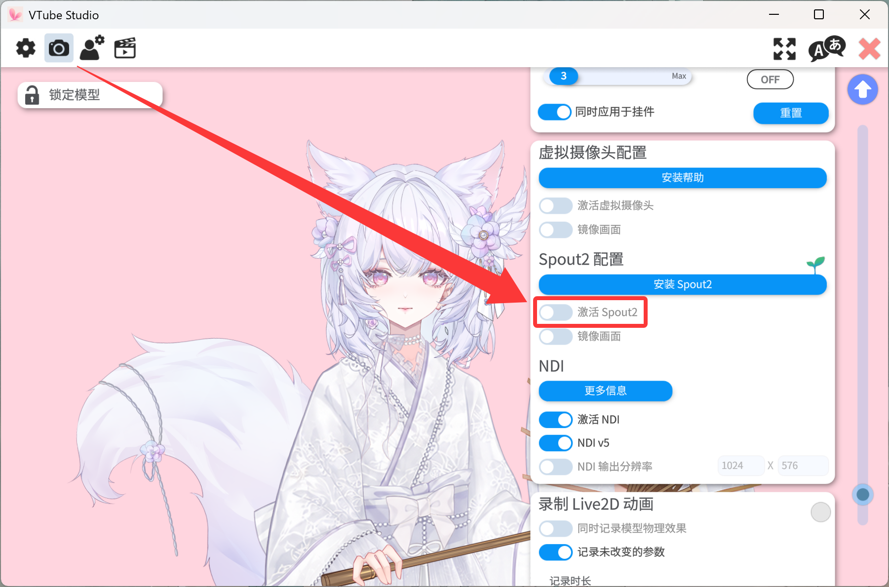
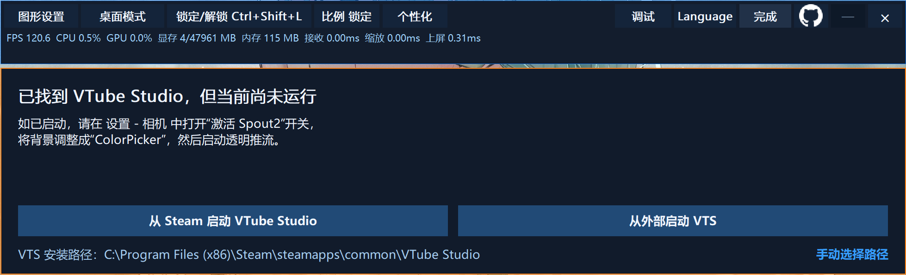
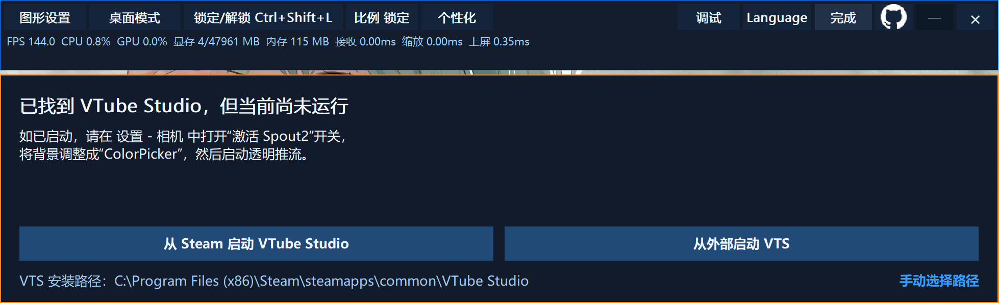
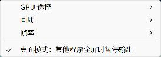

前往 GitHub
前往 GitHub 1.
启用 Spout2
用于将 VTube Studio 的视频流推送至脚本


按照下面的步骤完成启动 设置和自定义
脚本会主动从注册表寻找 Steam 中的 VTube Studio 路径或者由你手动选择路径

完成下面 3 项设置后即可开始接收透明模型
用于将 VTube Studio 的视频流推送至脚本

用于脚本获取实时渲染帧数 实现悬停更改模型表情等功能 如默认端口非 8001 请在脚本提示中手动点击“扫描端口”按钮


用于将获取到的视频流透明化 输出到脚本当中


根据你的使用习惯调整模型的显示与互动方式
可自由设置模型窗口的边框颜色和边框粗细。

可调整模型平时显示的不透明度，并选择适合当前显示器的界面缩放比例。

可设置鼠标经过模型时的透明程度，并调整自动触发区域向外扩展的距离。

可在模型窗口内框选并保存多个独立的鼠标触发区域。

可选择多个鼠标离开触发范围后播放的模型表情，并设置对应的播放时长。

工具栏可切换「悬浮窗口 / 桌面模式」。桌面模式取消置顶；在图形设置中可开启「其他程序全屏时暂停输出」，仅针对模型所在显示器的前台全屏程序，退出全屏后自动恢复。

把模型链路与游戏渲染分开 减少 GPU 争用
当独显（高性能显卡）运行在极限负载的程序或游戏中时 VTSFloat_Meow 输出的透明模型可能出现异常卡顿 极限负载状态会最大占用独显的渲染队列 显存带宽和调度时间 导致模型渲染 共享纹理接收以及 Windows 透明窗口合成都可能得不到及时执行 从而出现掉帧 延迟甚至短暂卡死
录屏主要在 GPU 内部完成 而 VTSFloat_Meow 还依赖 Windows 桌面透明窗口合成
VTSFloat_Meow 的 Spout2 接收和模型缩放已经通过 D3D11 在 GPU 内完成 但最后仍需由 Windows 桌面合成器显示透明窗口 独显满载时桌面合成得不到足够调度 因此比主要在 GPU 内部工作的录屏软件更容易卡顿
纯 GPU 的 DirectComposition 同样依赖桌面合成 甚至可能出现 Present 长时间阻塞 除非注入游戏内部绘制 但会带来反作弊和兼容风险
请调整高负载程序或游戏的性能开销 特别针对显卡高负载的设置请降低其配置进行运行 特别留意类似“帧率上限”相关的设置 这将极大占用显卡的性能开销 可以将其调整至 60 帧或者其他更低的帧数进行尝试
因此 GPU 处理加 Windows 透明窗口上屏 是目前更稳定的非注入方案之一
如果游戏出现卡顿可以先降低画质和帧率上限 或把 VTube Studio Spout2 与 VTSFloat_Meow 切换到核显或节能 GPU
画面在 GPU 之间传递 最后交给 Windows 桌面合成器
本程序不会注入任何游戏或应用，也不会读取游戏画面或参与游戏渲染。
本程序可完全离线运行，不会主动访问互联网；VTube Studio API 功能仅通过 localhost 与本机 VTube Studio 通信。
本程序不会访问 VTube Studio 使用的摄像头或其他连接设备。
接收到的模型画面仅在本机 GPU 与 Windows 桌面合成链路中处理，不会上传或录制保存。
README 中的性能建议 技术栈和构建信息
建议 VTube Studio 画布分辨率与覆盖层窗口分辨率尽量接近 分辨率越大接收缩放显存读写和合成成本越高
优先选择跟随 VTS 配置 或使用不高于 VTS 实际输出的固定帧率 覆盖层设置更高不会产生更多模型帧
窗口位置大小比例锁定帧率 GPU 选择和 API 端口会保存到本机
%LOCALAPPDATA%\vts_overlay_layered.ini安装 Visual Studio 2022 C++ 工具链后在项目根目录执行
.\native\build_native.ps1 -Configuration Release输出为根目录的 VTSFloat_Meow.exe Spout2 接收端已编译进程序
VTSFloat_Meow.exe 可直接运行的程序
native/ C++ 源码和构建脚本
native/third_party/Spout2 内置 Spout2 源码
start_overlay.cmd 启动程序
stop_overlay.cmd 关闭程序
md/ 补充说明当前版本 v1.1 正式版
v1.1 已进入正式发布阶段
源码和构建脚本可以前往 GitHub 查看
前往 GitHub